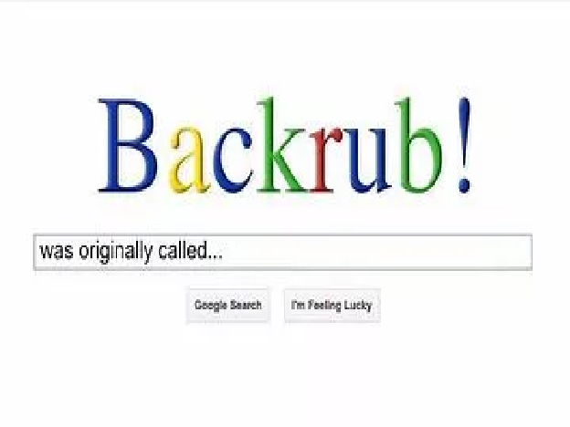

The most interesting facts about Google
Google, 1997 में स्टैनफोर्ड के दो छात्रों: लैरी पेज और सर्गी ब्रिन द्वारा लॉन्च किया गया एक सर्च इंजन है। दो साल तक इन छात्रों ने इंटरनेट पर जानकारी खोजने के लिए एक उन्नत पद्धति पर काम किया था। Google के निर्माण के बाद से, कंपनी पहले से ही $ 400 बिलियन की है! यह Google को दुनिया के सबसे मूल्यवान ब्रांडों में से एक बनाता है। गूगल ने भी सिर्फ एक सर्च इंजन से कहीं ज्यादा विकसित किया है। आज आप नेविगेट कर सकते हैं, मेल कर सकते हैं, वीडियो देख सकते हैं, अपने स्वयं के वीडियो अपलोड कर सकते हैं, समाचार पढ़ सकते हैं, अन्य भाषाओं का अनुवाद कर सकते हैं और बहुत कुछ कर सकते हैं। Google प्रतिदिन 3.5 बिलियन खोजों के साथ है, जो दुनिया में सबसे लोकप्रिय खोज इंजन है। हमने Google के बारे में 10 सबसे दिलचस्प और मज़ेदार तथ्य एकत्र किए हैं!
1. Google के पास दुनिया में वेबसाइटों की सबसे बड़ी अनुक्रमणिका है।
Google के पास 3 बिलियन से अधिक वेबसाइटों के साथ एक अनुक्रमणिका है। जब यह सूचकांक मुद्रित होगा, तो आपको कागज का 130 मील ऊंचा ढेर मिलेगा। Google इन सभी वेबसाइटों को आधे सेकेंड से भी कम समय में खोज लेता है। यह एसईओ के महत्व को भी दर्शाता है, आप दर्शकों को भी साइटों के इस बड़े सूचकांक के बीच वेबसाइट मिल जाएगी।
2. Google का मूल नाम बैकरब था।
बाद में, कंपनी उनका नाम बदलना चाहती थी, इस तरह नाम: Google का जन्म हुआ। आखिरकार, Google शब्द की गलत वर्तनी है: गूगेल, सौ शून्य वाले एक के लिए गणितीय शब्द। यह नाम सभी सूचनाओं को दुनिया के लिए भी सुलभ बनाने के कंपनी के मिशन को दर्शाता है। यह बहुत अच्छा काम किया, क्या आपको नहीं लगता?
3. Google खोज तकनीक को पेजरैंक कहा जाता है।
पेजरैंक प्रत्येक वेबसाइट को प्रासंगिकता का मूल्य प्रदान करता है और यह निर्धारित करता है कि वेबसाइट कितनी महत्वपूर्ण है। पेजरैंक का नाम गूगल के सह-संस्थापक लैरी पेज के नाम पर रखा गया है। SEO आपको सुनिश्चित करता है कि आपकी वेबसाइट को Google द्वारा महत्वपूर्ण माना जाएगा। यदि आपकी वेबसाइट को Google द्वारा (अधिक) महत्वपूर्ण माना जाता है, तो आपकी वेबसाइट रैंकिंग में उच्च होगी। बाहर से कोई नहीं जानता कि पेजरैंक कैसे काम करता है, जिससे इस प्रणाली में हेरफेर करना काफी कठिन हो जाता है। यह शायद सफलता की कुंजी है, क्योंकि इससे आप हमेशा अपने लिए सर्वोत्तम परिणाम प्राप्त करेंगे!
4. 16 अगस्त 2013 को 5 मिनट के लिए भी Google नहीं पहुंच पाया था, उस समय वैश्विक इंटरनेट का उपयोग 40% तक कम हो गया था।
यह तथ्य बताता है कि आज Google कितना महत्वपूर्ण है। जब लोग अपनी पसंद की वेबसाइट नहीं खोज पाते तो लोग इंटरनेट का कम इस्तेमाल करते हैं।
5. Google 1997 में अपने सर्च इंजन सिस्टम को Yahoo को 2 मिलियन डॉलर में बेचना चाहता था।
Yahoo ने इस प्रस्ताव को स्वीकार नहीं किया। बाद में, Yahoo इस प्रस्ताव पर वापस आना चाहता था और 2002 में 3 बिलियन की पेशकश की। इस बार Google ने प्रस्ताव को स्वीकार नहीं किया। आज याहू गूगल की तुलना में बहुत कम मूल्यवान है। मुझे यकीन है कि वे अभी बहुत बेवकूफ महसूस कर रहे हैं!
6. Google का पहला ट्वीट था: बाइनरी कोड में "मैं भाग्यशाली महसूस कर रहा हूं"।
आज ट्विटर पर गूगल के 12.2 मिलियन फॉलोअर्स हैं। यदि आप सर्च इंजन में होने वाली सभी गतिविधियों के बारे में अप-टू-डेट रहना चाहते हैं, तो आपको उनका अनुसरण करना चाहिए!
7. सभी खोजों में से 16% से 20% को Google पर पहले कभी नहीं खोजा गया।
इसका मतलब है कि Google को हर दिन लाखों खोजें मिलती हैं जो पहले कभी नहीं की गईं। अप-टू-डेट रहने के लिए SEO सिस्टम को इन नए विकासों के बारे में खुद को सूचित रखना होगा।
8. गूगल होमपेज 80 भाषाओं में उपलब्ध है।
चूंकि Google कई भाषाओं में अपना सर्च इंजन प्रदान करता है, इसलिए दुनिया भर में Google का उपयोग किया जाता है। इन सभी 80 भाषाओं में गूगल ट्रांसलेट भी उपलब्ध है। जोड़ी गई अंतिम नौ भाषाएँ हैं: हौसा, इग्बो, योरूबा, सोमाली, ज़ुलु, मंगोलियाई, नेपाली, पंजाबी और माओरी।
9. 2014 में Google विज्ञापन से Google के राजस्व का 89% था।
Google वर्तमान में SEA (Search Engine Advertising) से सबसे अधिक कमाई करता है, कंपनियां विज्ञापन अनुभाग में खोज परिणामों के शीर्ष पर खड़े होने के लिए भुगतान कर सकती हैं। SEO आपको Google के ऑर्गेनिक परिणामों में उच्च स्तर पर पहुंचाएगा। शोध से पता चला है कि खोज इंजन उपयोगकर्ता ऑर्गेनिक परिणामों के शीर्ष पर वेबसाइटों पर जाने के बजाय जाते हैं।
10. Google की विश्वव्यापी बाज़ार हिस्सेदारी का लगभग 90% हिस्सा है
जब खोज इंजन (जनवरी 2017) की बात आती है तो Google की बाजार हिस्सेदारी लगभग 90% है।